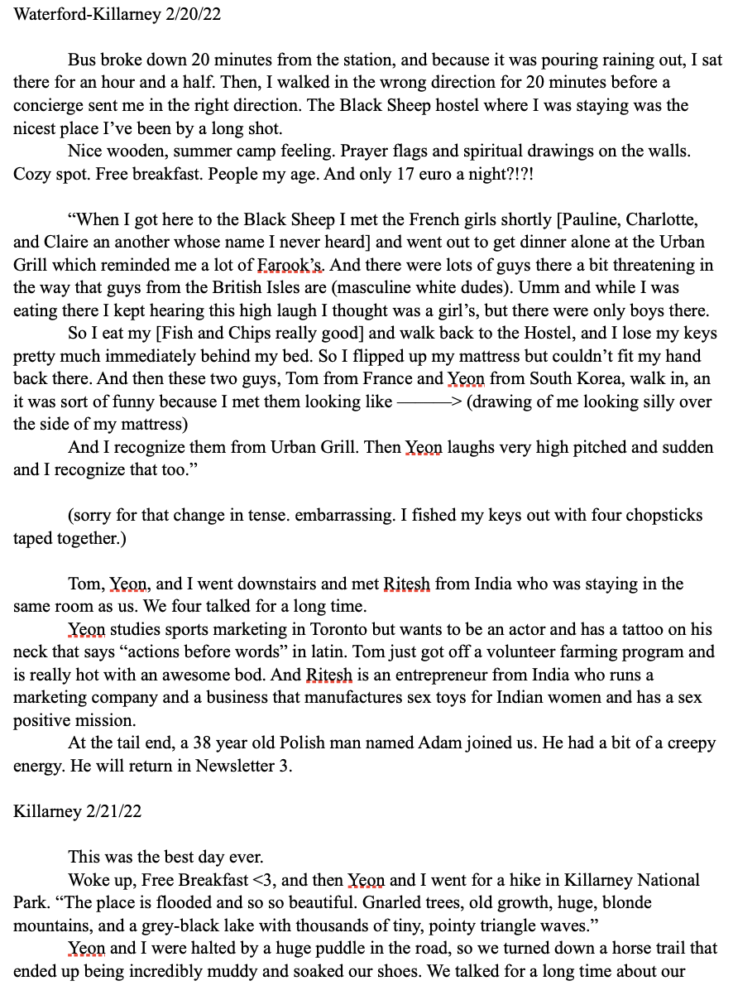
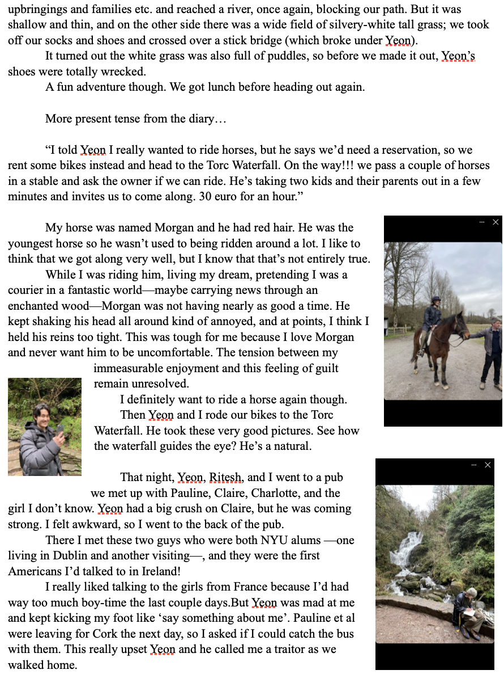
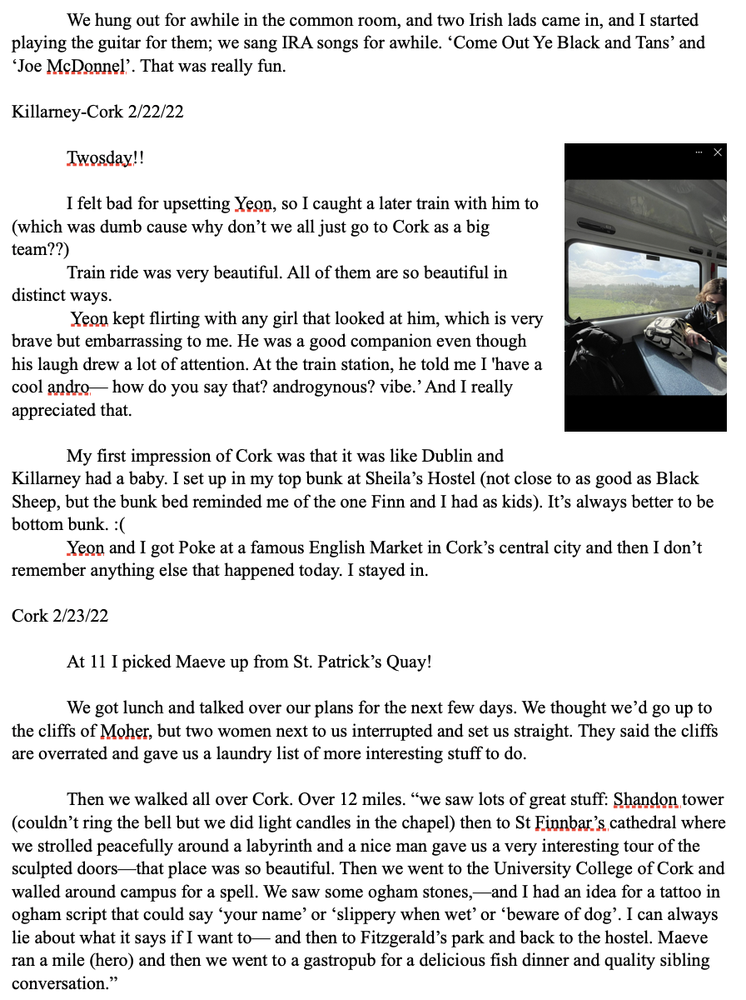
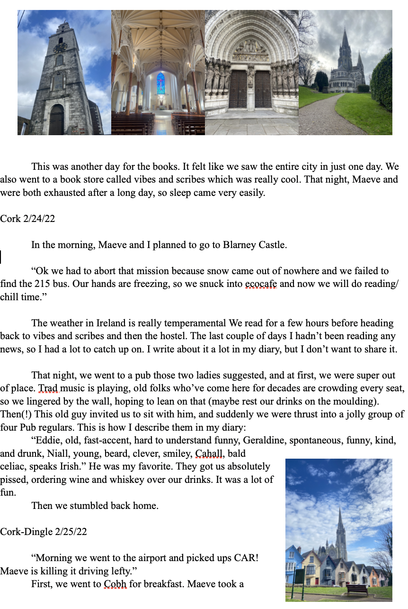
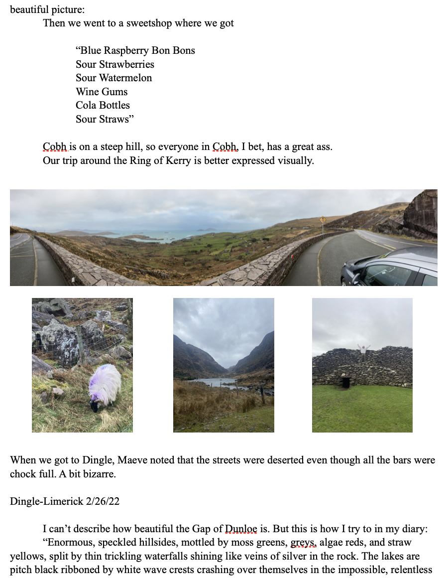
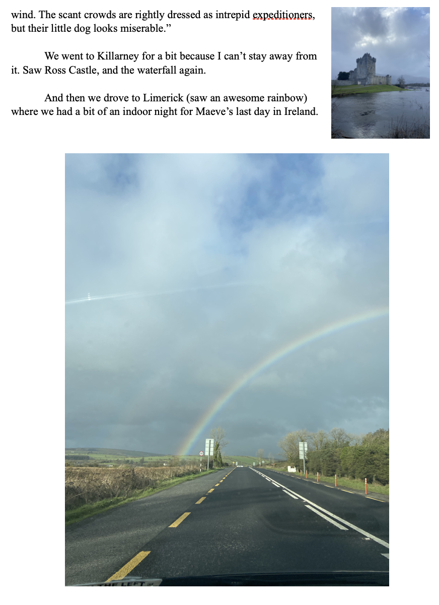

IRELAND WEEK 1 : 2/12/22-2/19/22
Bethel 2/12/22
Mom and I scrambled to find my passport and Fax proof before heading out the door. She was very nervous that I would miss my plane so we left super early, and got there with time to spare. On the drive to JFK, I forgot that I was about to leave for six weeks with no firm plans or places to stay and got very scared. From my journal:
“On the ride over here, a horror ebbed into me. I have not thought anything out. I know no one. I have zero prospects… I tried wrapping my mind around [this trip] or thought about the image of trying to stretch a human brain around the hull of a huge ship: impossible.”
In the airport I was extremely nervous and awkward, overladen with my giant green backpack. I stood behind an Irish family and freaked them out by staring too much and then the person I sat next to on the flight changed seats right before takeoff (in my mind, that was because I was sweating a lot and completely silent and visibly terrified).
Flight was easy. Red eye from 8:55pm US time to 8:25am Ireland time.
Dublin 2/13/22
Seeing Ireland from the plane was amazing. We dipped under a bank of clouds and suddenly it was all in front of me in the morning light. “It’s like from a book!” (quotes means journal).
Customs was easy.
I wasn’t allowed to check into the hostel till 2 so I had to lug my bag all over the city as I milled around Dublin. Felt stupid and tired with my huge backpack. At first, I had the impression that benches hadn’t gotten to Dublin yet because I couldn’t find any.
I passed a Quaker Meeting House and feeling exhausted and wanting to be brave/adventurous I went in.
“I just went to a quaker meeting… Some things I remember: ‘I think a problem with today’s world is not that people don’t believe in God but that they can’t feel His love.’ Two friends recently passed one man talked about them in such a beautiful way, another friend recalled someone telling him after their mother died that it felt like she was just in another room. After the meeting, the pastor (?) Had me introduce myself and I was so embarrassed. I felt a bit like a tourist intruding on a very special community (which is true). But then two other members Terry and Bernard talked to me and it felt so so so nice. I’m glad I went. Difficulty meditating in my scatterbrain.”
That was very helpful. I thought a lot about why I have come here and what to do in these next six weeks. At the hostel, Kinlay House, I came up with this:
“GOALS
-Meditate Daily.
-Introduce yourself x times
-Have conversations with x strangers
-Do something very scary everyday.
"
Before I went to bed, I wandered the streets of south Dublin, and a prostitute tried to solicit me for sex. I told her no very politely and counted it as one of my x conversations with a stranger.
Dublin 2/14/22
I made a lot of friends on this day. Lisa Breen who I met around 7 am in the common room, George who just moved from Brazil, and Steven who’s an older Irish guy who is always telling me that he will travel around Ireland with me and isn’t taking the piss.
At first I thought Lisa was just a very friendly and spontaneous person, but after a while I started to figure out that she was actually just really weird. We walked for a bit and she walked in circles always losing direction, insisted that I was Luke Kelly reborn, told me she was researching schizophrenia trying to prove it is a genetic disorder (which they’ve already proven, babes) and at one point she held my hand out of nowhere and that made me uncomfortable. But I guess fitting for Happy Valentine’s Day.
Went to the Book Store Hodges and Figgis which I loved so much I can’t even say and wrote out a wish list:
“The Complete Cosmicomics - Italo Calvino
Fantastic Tales - Edited by Italo Calvino
A Girl is a Half-Formed Thing - Eimear McBride
Beautiful Word Where Are You - Sally Rooney
Why Visit America - Matthew Baker
Gender Trouble - Judith Butler
The Horologicon + The Etymologicon - Mark Forsyth
The Study of Language 7th Edition - George Yule
Outline - Rachel Cusk
The Theatrical Notebooks of Samuel Beckett - S.E. Gontarski
Languages of Truth - Salman Rushdie
The Shock Doctrine - Naomi Klein
How the World Thinks - Julian Baggini
Anam Cara + Eternal Echoes - John O’Donohue
The Magic - Rhonda Byrne
Becoming Supernatural - Dr. Joe Dispenza
How to Tell a Joke - Marcus Tullius Cicero
The Histories - Herodotus (Tom Hollan)
The Tao of Nature - Chuang Tzu”
Free retail therapy. I ended up buying Anam Cara which turned out to be so incredibly bad in my opinion.
I was very jet lagged, so I slept a lot. I’ve been listening to the Wheel of Time series on audiobook--shoutout to my older brother James--and because the Wifi at Kinlay House is really terrible, I have to go out into the stairwell and reconnect every 30 minutes.
2/15/22
Here is some free writing I did in St. Patrick’s Park:
“- I enjoy the contrast at St. Patrick’s Park between the towering, stone, definitively, (I want to suggest it is announcing its own weightiness) heavy cathedral and the flat, placid emptiness of the park. Brings out the beauty of negative space and the calm of absence. Though it’s a little unnatural. There are no trees in the middle of the park. Just open shapes of grass, low stone pathguards for smooth stone paths, and a modestly, ornate fountain that mirrors the affect of the whole, trickling splashes of water from its central monument into a wide surrounding pool. Which is also shallow. It reproduces an important aspect of this place: that, while the contrast is stark, the opposing feelings [it produces] are joined in a peaceful completeness. I don’t think I could ‘enjoy the contrast' between this park and a garish shopping center or that cathedral and an empty parking lot. Not as much. The second sounds kind of nice. And actually I could enjoy either. Such is my incredible capacity for [the] enjoyment of things.
- I don’t mean to sound pretentious when I say this, but fecund.”
That night I had a really yummy dinner at Kathmandu Kitchen. So good.
2/16/22
I went to see The Book of Kells exhibit in Trinity College, and it was my favorite part of the trip so far.
What I really loved about this exhibit and the book itself was the self-conscious attitude toward the act of writing. There were poems, written by the scribes, from the perspective of a book being bound and another about the movement of ink on paper. I write a lot and am always thinking about the physicality of writing because it’s often thought of exclusively as a mental medium, an ethereal expression of thought rather than the interaction with space and object that it is. I think I would have fit in very well with the Irish Monks in a Scriptorium.
This is an eight sentence short story I wrote afterwards (doesn’t have anything to do with writing or the Book of Kells). It’s mostly run-on sentences.
It’s called “stop up your ears with cotton”.
“Eddie had heard as many folk tales, fables, myths, and stories as anyone, but he found that their lessons were hardly relevant to modern life, knowing not to trust old women in gingerbread houses but never encountering any. One day, Eddie got told off by his boss after giving a presentation that turned off the shareholders; worse than the lecture itself were the gossiping whispers [between coworkers that] his ears strained to overhear. That night, while his girlfriend was complaining to him about drama with her mother again, Eddie recalled a storytime solution that had worked for Odysseus among the sirens, Princess Perizade (sp?) among the black rocks, others he was sure, and stopped up his ears with cotton. Suddenly, the disapproving notes from corporate, lectures from his boss, mentions of his name by coworkers, all the problems he was told about but could not fix, even the smooth jazzy elevator music he’d never liked rolled away from his notice, and he was happy. Soon, however, his life became a horror of images: his love packing her things and slamming the door behind her, a pink slip arriving on his desk, and all the terrible views the world had to offer (trash, cops, pain) appeared to him in sharper relief. Eddie thought about gouging out his eyes like Oedipus had but didn’t because that didn’t really fix his problems (or Oedipus’), did it? Instead—very rationally—Eddie removed the cotton from his ears and called his girlfriend, and it was good to hear her voice even while she told him it had all been an idiotic idea that, to her, came out of fucking nowhere. Listening to the birds the next morning, Eddie reasoned, probably incorrectly, that the real lesson of those childhood stories was not to act like a fable character but to accept that in the course his life, he will be taught many simple things he already should have known and to try to listen well.”
Went to a pub with a guy from the Netherlands who was very nice and we talked about American politics (ouch). Guinness is so delicious to me.
2/17/22
I packed up my things, walked to Heuston Station in the rain, rode to Thurles, was helped by two angels in the Tourist Office there who were so funny and nice and helped me call a car to Cashel.
The ride there turned out to be more interesting than the castle I’d come to see. It seemed that my driver’s (Jim Fitzpatrick’s) job was to ride around Cashel picking up friends and dropping them off. When I got into the car, an old woman was in the back with groceries, and on the way to my destination he dropped her off and picked up another fellow to bring him to the gas station. With both these people, it seemed like they’d known each other for a very long time and talked easily about new developments in their lives since the last time they’d seen one another. Made me feel sad for Uber drivers. Alienated labor.
2/18/22
It was supposed to rain, so I planned an indoor day at the Rockville B&B where I was staying.
“11am Playing in my magical world.
12pm Meditation Time.
12:30pm Cigarette Time.
12:41pm Internet Time. (more like Sudoku and the News time)
1:30pm Giants Time [that is play the I’m working on]
2:35pm Lunch Time. Lunch was so good. I had battered cod and when I dropped lemon juice on it, it sizzled.
4:30pm Wheel of Time Time.
Got stuck on the internet.
Took a nap at 8 something and now it is tomorrow.”
2/19/22
Had a nice breakfast at the hostel. The owner of the place was always joking that I smoked lots of marijuana cause I look like a stoner (?) but I really didn’t smoke any marijuana…
Then I take the bus down to Waterford. When I get there, the hostels are all full up so I go to a hotel and it’s crazy, stupid expensive. I initially booked 2 nights, but then mustered my courage and asked if I could please just do one instead.
I didn’t like Waterford that much. I took an interesting tour of the Medieval History museum and Viking Triangle, but not much else going on there. A girl invited me to come to the pub where she worked but then I didn’t.
I think this covers my first week in Ireland. Next time I will tell all about weeks two which has actually been so fucking cool and fun.
I love it here! The people are incredibly friendly, everywhere is incredibly beautiful, the weather is fickle but my favorite (overcast, windy, light rainy). Traveling between cities is its own distinct pleasure. Looking out the window and watching the hills of grass roll by. There are lots of people who share my last name, and people are usually pretty happy to see me. I have become slightly more sociable and brave in my short time here. It’s moving surprisingly quickly. I’m in Cork now and spent the last two days in Killarney which was my favorite place so far. The best news is that my sister is coming tomorrow and I cannot wait to see her. It will be good to really know someone. I’m excited to tell you all about it next week!
Love,
Luke






WEEK 3 NEWSLETTER
(CW: In Killarney 2/28 Úna talks about some pre
Limerick - Killarney 2/27
Maeve left for Dublin Airport early in the morning, but she got held up there for a few hours and had to take another flight. I have to remember to get a covid test before I go home. Maeve left a nice note in my diary. It ends: “You are AWESOME!”
The feeling is mutual!!
Got the bus back to Killarney cause I just couldn’t stay away from that place. I didn’t do much of anything but get to the Railway Hostel and lie in my bunk.
Killarney 2/28
“Woke up about 10:30 here in the Railway Hostel. Not as nice as the Black Sheep but just because it’s a little grittier. That’s kind of cool in its own way. I’m in the ‘owl room’ which is very thrilling for me. And there is an owl statue at the front desk that I would like to steal.”
Found Adam (Polish guy, from Week 2, painter, 38 (he says)) staying in the bunk next to mine that morning, and couldn’t refuse his offer to show me around the park. We left around noon and we walked about for a while. It was a little awkward just because I didn’t have much to talk about with him. He showed me these little hearts that he spray painted around the city which was pretty cool, but I was seriously dreading have to spend the whole day just the two of us.
I saw two people across the street in hiking gear and really wanted to hang out with them. So, Adam and I went up to them and luckily they had all met before. Joe (from India) and Úna (from here) walked with us to the park. We take a spot by the river and they all smoke a bit. I did a good job saying no since I’m not allowed:
“quickly, Úna launched into a spiritual polemic that—over the course of the whole day (maybe 6 hours) and three locations (the last of which was very beautiful)—covered her pain and oppression in being a woman, far flung notions of vibrations, sound, witchcraft, and the interactions of energies within her, travels to Canada, meetings with different lovers, her dead dog, a play she’d like me to write that she can perform*, the girls in her acting class who dislike her because she’s different, her family, an ontology of different forms of rape including energy rape and orb rape, lots of animalistic grunts, evil, gurus, the body, shortcomings of Joe and Adam, and much more that I can’t remember. Psych wards, rapes, abuse. A lot. Catholicism, Putin, Biden. She said she would walk to Ukraine. ** It’s too much to recall here. Suffice it to say, it covered a large range and was very intense.”
* The characters names are Left, Right, The United States, Great Britain, and All The Countries of the World.
** She also insisted that she was the “witch of time” and a monster from another dimension.
In a lot of ways, I related to Úna. And between the brambles of convoluted spiritual theories and unfounded assertions about the nature of reality, we had genuine moments of human connection. The whole interaction was a confusing rollercoaster. It felt like I was tripping for 6 hours. At the end of our day, she offered to drive me to Kilkenny.
That night, I called Finn and felt very homesick. It was a draining day.
Killarney - Kilkenny 3/1
“Rude awakening into March. The owner of the place woke me up letting me know I had slept in past checkout. When I was getting up, I couldn’t find my fanny pack, and I think somebody stole it. I’m lucky that’s all they took; my shit was strewn all over the bed. If they do have it, they got half a box of filters, some papers, a little tobacco, a plastic bag of change, a stick of glue, pens, and a deck of cards I drew on during quarantine. I’ll miss those the most. I hate the feeling that someone made me their fool, but I know I’m a very foolish guy…
Debating whether I should ride with Úna today. My wifi isn’t connecting, so I’m worried I won’t find a good bus route. Maybe it’s fate. But I don’t want to ride with her. She has the expectation that I will write her play and make lots of money with [it] but she only needs 10%. And I feel partly guilty because when I was with her I was entertaining this fantasy and all, but I know I’m going to let her down eventually. She thinks it’s this genius play that will solve all the world’s problems the second it’s performed and that she’s the ‘smartest woman in the world.’ Can’t imagine living up to what’s in her head in any scenario, so. I figure I might as well let her down as quickly as possible. There’s a train to Limerick at 12. I will take that.”
I felt a little guilty but ultimately very glad that I ditched Úna. Maybe as a form of payback, my travel was a total shit show. Train to bus to wrong bus station to new bus to right train station to last bus to Kilkenny to wandering around to finally finding the hostel.
“I think this region of Ireland looks very nice. Something about it is autumnal. Fields, straw, mostly bare trees but a few still have brown leaves. And at this point of day, the orange glow of sunset pinks and fades into a blue sky that may dredge up some old associations with falls in Connecticut.
I bet halloween is awesome in Ireland.”
Kilkenny 3/2
“Having a great day. Walked along the river, through the castle park, around Kilkenny Castle [favorite castle so far], into the design centre, euro giant value store (bought toffee crisp, apple candies, and ramen), came back to the hostel and made my famous peanut butter noodles which I ate while watching Democracy Now.”
The river and park were so peaceful and beautiful. I felt completely happy.
I also bought a little tin whistle and played it in my room.
I had a lot of fun writing today. I loosely outlined an idea for a Community spec script, played around in my fantasy world, and did some ideation for a play submission coming up. This next excerpt is a bit of depressing stream-of-consciousness.
“There was an excruciatingly long time before. That fact is obvious and painfully revisited, pulled up from the bottom of a well again to be pummeled and punctured by the mob. Between that time and this, there must have been some speedy but severe cleavage. We’ve escaped history (nearly, its hands writhe sinuous in grasps at the collective throat) now tourists laze where the royals once plotted and bombs reduce holy places, great temples and cities to rubble. I wonder how many times fish flopped up from that primordial soup before they remembered to trade in their gills for lungs. What is this to that? And when there’s a new this what will that this be to this this? Will this “this this” have any that-ness to that “that this”? And if not (which it will not) could we please find some way to suffer this this-ness with ease? Or pleasure!”
Tonight I wrote until my hand hurt and went to bed. Such a great feeling.
Kilkenny - Dublin 3/3
“Comical morning so far.
“Left the hostel, thinking I could gin the bus by map, wandered across the river and was immediately confused and lost, Eventually, I decided I was running on empty (so tired under my hulking green backpack), so I went into a Turkish cafe and ordered. I took off my long underwear in the bathroom because I was sweating bullets. But when I sat back down I realized my phone was missing. I told the cook I left my wallet in the hotel room and left my bad at the cafe as collateral. I ended up sprinting the same loop I’d just done and, exhausted, returned to the cafe empty handed. I felt like an idiot, but he let me pay with ten euros. Of course, when I went into the bathroom after I was done eating, my phone was there, right where I didn’t know I left it. So stupid.
I still have no clue where the bus is.
…
Today’s lesson. In a moment of crisis, take time to consider all your options before acting.”
The hostel I stayed in was called Generator, and it was very modern and cool. I had a Boojum Burrito for dinner, but it was actually pretty bad.
Dublin 3/4
I walked down the Liffey to the Samuel Beckett Bridge, bought another stupid book (a literary journal with amateur Irish writing), and went to see Martin MacDonagh’s ‘The Lonesome West” at the Gaiety Theatre. This was my review:
“Just finished. It was really good. So Funny. The last scene was an absolute riot. Kind of wished he hadn’t gone shooting the oven and smashing all the figurines. But in the end, I think it was right.”
Dublin 3/5
“Today was such a great day. I met Aunt Jen [she flew in from London] at MetroCafe around 10 and we had breakfast before going to Kilmainham Gaol. Again, very interesting. Then we walked to the Guinness Storehouse and it was a very good thing she had already bought tickets because it was jam packed. We went to a nearby bar and shot the shit about our family. She has such an interesting perspective on my dad, Aunt Carrol, and Uncle John, being their younger step-sibling. And I think we’re pretty similar in a lot of regards, not as tough drinkers as other Maloneys… Kind of black sheepish in a way.
Then the storehouse was very cool. Started off pretty lame but got more and more fun as we kept moving up. I lost these [my drink tickets] in my pockets, but they served me anyway. My favorite part was the advertising history floor.
We learned how to pour the perfect Guinness:
1. Get a glass
2. Hold it under the nozel (nozzle?) at 45 degrees.
3. Pull the bar all the way down (90 degrees)
4. Pour until the liquid reaches the bottom of the golden harp (should be facing away from you)
5. Then rotate so the glass is parallel with the [nozzle] hits the top of the golden harp. Stop pouring.
6. Put the glass on the table until its color evens out to darkness
7. Then hold it parallel under the nozzle again and push the bar away from you.
8. Fill so that the foam makes a little cap on top.
9. Serve.
That class was a lot of fun. We had a Guinness upstairs and talked about the states and what it’s like raising a family in London.
Had about an hour of down time before we met again for dinner. It was so so good. One of the nicer meals I’ve had ever. The place was called Pichet. We split some delicious wine and a mackerel, blood orange, fennel appetizer. We both had the halibut with cauliflower, mussels, and this incredible sauce. Blew my freakin mind.
Finally we went to the Stag’s Head in Temple Bar and had 3 more Guinness. Learned how to “split the G” [that’s where your first sip splits the ‘Guinness’ on the glass in half]…
Amazing day! I love my Aunt Jen! Hopefully, I can have a good relationship w all the Oplands going forward.”
And that’s the third week! I hope you liked reading that. Writing these has become one of my favorite parts of this trip because I get to express myself through writing to my favorite people around. Sorry for no pictures. I will post them on instagram when my phone gets connection.
WEEK 4
Galway 3/6
Last we’d left off, I was hanging out with my Aunt Jen who rules. I took the train over to Galway and wrote for the entire ride. That was a really great feeling. Here’s what my diary says about the first night in Galway.
“This trip is entering difficult mode. I am drained and depressed. Went out for fish and chips at MacDonagh’s (so good) and then was feeling low so I saw The Batman. Did not like it as much as I wanted to. I’m just lonely.”
Then I write for half a page about everything making me sad, until:
“I just remembered Mojo Moo is here. He says hi. Ok. I feel a lot better.”
If you haven’t met my stuffed cow Mojo Moo, you are really missing out.
Also, if anyone wants to talk about The Batman I have lots of thoughts about it. 2 stars.
Galway 3/7
“HAPPY BIRTHDAY MAEVE!!!”
Decided to take an indoor day because of my feeling so exhausted and all that nonsense. These entries are kind of sad; I spend all day alone and then go to a bar where I’m too scared to talk to anyone. Here’s what I write instead:
“I feel this need to express maximal enjoyment of my time here, maybe to convince myself and others that this hasn’t been an enormous waste. Cataloguing in my mind the moments that I feel—at least right now—encapsulate the truest nature of this trip, I’ve got: hundreds of conscious removals of my tongue from the roof of my mouth, relaxations of [the] muscles in my upper body tensing against the cold or social stress, hovering my pen above these pages till the right words come, rigorous debates raging [in my head] about what I should be, should do, have been, am now, could do, pressures of molar on molar, etc.”
This entry wades eventually to the realization that I shouldn’t try to calculate joy. And of course, as you’ve read, there’s been a lot of enjoyment to calculate.
And then I wrote a few paragraphs in my fantasy world. Here’s the opening:
“On a small, rock beach, held by two short walls of eroded stone, Mac knew no one would be able to spy on him while he practiced. Which was a good thing. If anyone from school saw him—waving around his dear peeled hazel stick, pretending like it was a wand, moving deliberately through the motions of a thousand spells he could never cast—he figured he’d walk directly into the slate guy was and wade forward till he drowned. He wasn’t thinking of that now. These moments, alone in his cove, were small raptures that took him away from the world. To him, it wasn’t pretend…”and on and on.
One thing I’ve learned about myself on this trip is not to bring a journal with me if I’m ever going out in public and want to be social because it’s so easy for me to just stay in there and not talk to anybody.
Galway 3/8
I REALLY wanted to go the aquarium today but it was raining all day long and way too far away. Had more MacDonagh’s.
Instead, I went to the local museum and learned all about Galway’s history. It was a pretty cool place with exhibits about archaeology and city history, medieval Irish society and aquatic wildlife.
There was one room that was just footage of the Aran Islands (really beautiful) with wave and wind sounds all over it. And I was sitting there for fifteen minutes with this sweet old lady that would suddenly start commenting like “I wish there was some talking in this.” “What is that? It’s so grey. I’ll bet it’s rocks.” “That looks cold. Too cold!” And then if she wasn’t talking she was—I think—putting plastic bags into one bigger plastic bag (there was a lot of rustling) or combing her hair. Loved her.
Galway-Westport 3/9
Things are about to get a lot less depressing, but first.
My bus to Westport was PAINFUL. Not the bus’s fault. I must have taken my meds wrong because it felt like the pill was lodged in my chest and then this searing pain climbed my sternum and into my throat. I felt like I had to puke. Absolutely miserable.
Warning: this is gross. I spent the entire ride spitting into a water bottle, because spitting, for some reason, was the only thing that made me feel like I wasn’t about to throw up. It really hurt.
Eventually, mind won out over matter, and I convinced my brain that all the pain was in my stomach and that made me feel better for some reason.
Then I get to town. Walk twenty minutes with my huge ass backpack to what seems like the middle of nowhere. Try to get into my BnB and it’s locked. About thirty minutes later, the owner came back and let me in. The place was weird because I couldn’t tell who was part of the family that lived there and who was staying as a guest. But there were three dogs I got to play with and that was so so so so much fun for me.
Quite a boring day otherwise.
Westport 3/10
“I am having a lovely day. I’m in the Colonelwood and have walked around the forest all afternoon. There are [a] few gravel loops, but natural, trodden paths branch out between the trees too. The trees are mostly tall ones with long, bare trunks. I love the look of that[.] Like chutes forming bark-brown corridors beneath the canopy. The ground is soft, dark soil. I’m sitting between some roots that make a perfectly sized seat for my middling ass. It’s windy today, and I especially like when a gust of wind parts the leaves overhead, making way for the titanium white sky. I’m very happy.”
While I was in the woods, I played pretend like I was in my fantasy world. And then I read a bunch of poems I really like. After a series of difficult days, the tenth felt like a break in the case.
At night I watched Come and See which is a crazy soviet anti-war movie. Good but scary. Then I called with Kunal which made me ""💖 💖 💖 💖 💖 ”. Ended up staying awake till 7 am by accident. Watched the first part of that Kanye documentary which was really sad to me.
Westport-Easkey 3/11
I ended up booking a stay in Easkey which is a suuuuper small town, and I was worried would be very hard for me to find. But it was a pretty straightforward journey. When I got to Easkey I couldn’t believe this was really the place because it was so tiny. Had to eat lunch in light rain because the hostel was locked again, but while I was eating I saw a rainbow.
Worth it!
That night I had to work up my courage to go out to the local pub. Eventually, I did, but when I got in, the bar was full of middle aged town residents that didn’t seem to like the cut of my jib. So, I sat alone and wrote out the first half of a short story Maeve and I talked about. It’s inspired by the town Cobh in southern Ireland.
“There was once a woman who moved to a town that was built on one side of a steep hill. The grocers and the good restaurants and the park were all at the bottom of the hill, and the post office, dollar store and local pub were all at the top. Because all the inhabitants of the town had to walk up and down the very steep, very tall hill multiple times in a day, nearly everyone who lived there had a great ass. Tall and short, young and old, fat or skinny, almost everybody had a firm, perky, perfectly rounded pair of glutes. Almost everybody, but not the woman who’d just move there. Not Sheila.
Her butt was flat and disappointing, and it even hurt a bit to sit on because it didn’t provide sufficient cushioning between her bones and the hard surface of, say, a wooden chair. She’d never minded this, but living in the town on the steep hill side, Sheila quickly found herself a pariah and very insecure. No one wanted to be seen with her, and Old Charles Swabb (the first resident of the town who, despite his age, lugged around an impossible dumper) laughed openly in her face whenever he passed.
Sheila figured her great ass would come with time, but after two years living in the town, it had barely grown at all. She undertook an intense hillwalking regimen, frequently pretending to have forgotten something at the post or interrupting her dinner for a pint at the pub just so she could pack in a few extra trips up and down the hill. Sheila made sure to always have an excuse for climbing or descending the town because she didn’t want the rest of the population to see her struggle for a better body. In any case, Old Charles Swabb had openly mocked Sheila enough that everyone in town felt perfectly comfortable laughing out loud whenever they saw her unremarkable butt. One day, Sheila went to the town’s doctor whose ass wasn’t particularly large but defied gravity in its perk and ‘bubble butt’ shape. Instead of diagnosing Sheila, the doctor suggested she find new living arrangements. Incensed, Sheila became determined to find out how everyone else had gotten their fantastic asses.
She spied on the townspeople, taking note of their exercise habits, their diets, doing science on their genetic codes, even, to see if they were predisposed for great asses. She found nothing. Nothing but more ridicule. Surveying the town picnic from up in a tree, Sheila fell out onto the ground and clattered to the sidewalk with her clipboard and binoculars. The whole picnic turned, and when they saw who had fallen, the joyous laugh of fully affirmed insiders, rose up among them. Old Charles Swabb broke through the crowd and backed his way to Sheila until his ass hung right over her head. With his hand, he quieted the crowd and, after a comically timed period of silence, loosed a perfect, trumpet fart into Sheila’s face. Its high, clear tone added insult to injury, illustrating the butts perfect, if gratuitously large, shape. Sheila, humiliated and enraged, reached out a hand and slapped Old Charles’ butt. Instead of the clap of skin on skin, a dull sound flew into the air. Plastic. Like slapping tupperware.”
I paused there for the night, left the pub, and went to bed.
Easkey 3/12
This was a really great day. I walked along the coast all day. It was beautiful and very peaceful.
“This place is incredible. Craggy rock faces cracked and covered with lichen hold shallow puddles of sky-colored still-water… I got caught in a wave and he soaked my boot. Belts of seaweed, caps of moss the standing stones wear. The grass is so grassy. And soft and everywhere.”
I laid in the grass with my nose in the dirt for a while before I went back home.
That night, I went back to the pub, and I recognized someone from the hostel. An older man named Mark from Germany who I sat and talked with for a while. He is a professor of linguistics at a University in Hamburg. I was really proud of myself for carrying on a conversation, and I think I did a decent job of keeping it flowing!
WEEK 5
Easkey-Dhu Varren 3/13
DISASTER STRIKES!!
I got all the way to Derry in what was supposed to be a six and a half hour journey. I was pretty hungry, so I got something from the vending machine. I take a loop around the bus station, and when I sit down again, I can’t find my bank card! I looked all over for it, but it was nowhere to be found.
This freaking sucked. Very annoying. Wanted to cancel the card, but then I didn’t have any cash and would have been totally stranded.
Managed to get train tickets on my phone. The train station was very surreal because it was completely empty. There was an out of tune piano, and I played it for a little while. To calm myself down on the train ride, I wrote the ending to the ass story:
“The townsfolk ran, but Sheila, legs grotesquely muscled from trips up and down town, was faster. Indiscriminately, she slapped, pinched, grabbed and poked the flapping flab that fled beflore her. Not one among them was a real flash ass, but implants, padding, and in more than one case, a pair of plastic bowls tucked into underwear. Eventually, the residents escaped to their houses and cowered behind locked doors. Sheila passed Charles on her way to retrieve her binoculars and only held in a revenge fart because she wasn’t sure a little shit wouldn’t come out.
In the early days following what would come to be known as ‘the reckoning’ (discussed by the town with the same abbreviated historical relevance you or I might give ‘the pandemic’), a significant percentage of the population stopped wearing their fake asses. Many even visited Sheila to sincerely apologize for their untoward harassment. Inside a month, however, the asses were back and the town ignored Sheila as they had when she first moved in.
When 60 Minutes came to do a story on the town of incredible rumps, Sheila did not reveal their dark secret as some feared she would. Instead she waved to the camera and strolled silently by. When asked by a producer why she was the only one in town with normal buttocks Old Charles Swabb had to think fast.
“Why, Sheila once had the largest ass of any of us. Thrice the size of mine! Had to have it chopped off for medical reasons.”
Sheila did not mind her new position in town. She was always greeted with friendly—if frightened- smiles and was given the key to the city when she one time gave an old lady directions. Sheila was respected, by some, even liked. She was happy and continued her hillwalking regimen openly, not of jealousy or want, but out of sheer enjoyment and a little spite.”
Then I wrote a whole entry about how stupid I am and how I should love myself even though I’m an idiot.
By the time I got to Dhu Varren it was dark and I was confused where the BnB was. Honestly a miracle I found it!
Dhu Varren 3/14
This was the best day of the whole trip.
So, I didn’t have any money, and I wanted to get to the Giant’s Causeway. It was nine and half miles from where I was staying, but if you know me well, you can probably already guess that I walked.
The trek was all on twisting highways in cliffs over the sea. So gorgeous. I saw an awesome castle and played around in the wind. I walked through paths on the beach and over grassy dunes and along a little bit of old train track. I was exhausted when I finally got to the Causeway.
I can’t really describe how much I loved it, but here’s what the diary says:
“I have made it to the Giant’s Causeway. Three hour trek. The sun is setting. The moon is swimming up into the blue. This place is so wonderful. I feel like I’m on an alien planet. Bowl of towering green cliffs. The unearthly power of these waves. Of course, the causeway itself is a mind boggling effing marvel. My suspension of disbelief is shattered and I’m floating somewhere far away from the real world.
And it’s golden hour! My life is a five star movie!
I wanted to try to describe these waves. They are so breathtaking, I think it will be a good exercise even if I fall short.
Emerging from the vastness, they form a bulge of surging power, currents muscling forward, competing, always pushing, a mob of blue. These waves erupt into themselves, implode in grand explosions of white foam. Their baffling size, humungasurus (for lack of a better term), manages to roll and ripple gracefully with speed and poised power. These waves mystify utterly, vaporizing upon impact with the rocks. These waves put the fear of Poseidon into you and teach you in terms you won’t forget why the God of the sea was also master of earthquakes.
I LOVE IT HERE!!!”
The walk home was a three hour slog. Another nine and a half miles. By the time I was back in the same town, I felt like my knees were going to give out. I talked to myself the whole time which is something I love to do when I’m alone. And I made some good hypothetical discoveries about the meaning of self-confidence and stuff like this.
Dhu Varren-Belfast 3/15
On the train out, I worked a lot in my fantasy world. Was still very worried about the debit card. I liked to imagine that whoever had it was really nervous to use it. I definitely would be. I would be thinking ‘free money yeah, but am I a robber? This isn’t who I am. I’m not a robber. Maybe just once?’
For the next couple days I go back and forth to the Castle Court Shopping Center trying to figure out how to get some goddamn cash. And that wouldn’t be too difficult, but my legs were so fucking crazy sore from my nineteen mile walk.
That night, there was an American family in my hostel and the kid above me was so annoying.
“Dude. This American guy over me. I want him to be quiet. Like this guy just said ‘I believe I live in the greatest country ever to be.’ Like what the fuck dude shut the hell up. I don’t know how the topic of school shootings came up and now he’s explaining the 2nd amendment and defending it. ‘I’m a christian, so I believe…’ ‘People in the US think it’s the worst country in the world. Go live in North Korea or Communist China.’ And he just called New York and California crazy. I hate this dude.
Michigan State fan so, coulda seen that coming.”
That last bit comes to you from the University of Michigan, baby! Shoutout Finn.
What was so annoying—I wasn’t talking at all. at. all.—but he was chatting it up with these German people and just going off with the worst takes imaginable, and they’re all laughing along. It pissed me off because European countries have so many social programs—this guy goes on a tangent explaining why its better to have bad infrastructure and expensive schooling but lower taxes—and politically are likely way left of this guy but are chumming it up like ‘huh yeah I see that. Yeah I guess that makes sense.’ It was frustrating, but it did make me feel less ashamed about how meek I am. At least I’m not running my big stupid mouth like this guy, right?
Belfast 3/16
Spent the whole day trying and failing to withdraw cash and working on my fantasy world. If you ever want to talk to me about my fantasy world, just get ready for a world of hurt cause that lore is deep.
Belfast 3/17
St. Patrick’s Day woo!
Got close to getting some cash but there was an error that would take another day to resolve.
A lot of people were leaving Belfast for St. Patrick’s Day because there are bigger parades and parties in Dublin and Cork, but I wanted to stay here for a very specific reason. The Sectarian Neighborhoods in Belfast are called The Falls and Shankill. Shankill is where Protestants and British Loyalists lived during the troubles and The Falls Road is where the Catholics and Irish Republicans lived. I spent the day walking around the neighborhoods and it was one of the most fascinating cultural/historical experiences I’ve had on this trip.
I wrote a long 3 page entry about it, but my fingers (and I’m sure your eyes) are getting tired so here are the spark notes.
THE FALLS
In terms of attitude, the people here were much more celebratory. Folks were waving Irish flags and wearing all green, coming in and out of pubs, and going along their way to festive Paddy’s day plans.
At first, I thought I should spend the night at a pub here, but I realized pretty quickly that these were old, established, former members of the IRA type pubs and not Lukey style bashful cutie pubs.
The murals along the Falls Road were really inspiring. They featured overtures of liberation, freedom, and peace. They commemorated not only members of Irish resistances, but also notable figures from movements around the world. Calls for social equality and justice. Solidarity with contemporary resistances in Ireland, Palestine, and the United States. The murals were colorful and artful. They made me want to cry because they were so inspiring.
SHANKILL
Most Shankill murals were about Northern Irish members of the British Military. Remembrance or stuffy historical information. Lots of black silhouettes and red poppies. Then there was one monument at Bayardo and it was fucking nuts. It was like BOOM these 13 CHILDREN were MURDERED by the IRA! Here’s a picture of a TERRORIST ATTACK carried out by ISIS! ISIS = Sinn Fein (political branch of the IRA)! This is a list of names of all the people that have ever been injured by the IRA! If you know of anyone that has been injured by the IRA, CONTACT US at this email address! Just very aggressive in your face, like walking around a 3D Breitbart article.
And then the mood in the neighborhood was extremely dour. Everyone was in black and they all just looked pissed. I made a speedy exhibit (what with my looking like a fucking leprechaun).
Thesis statement: The physical violence that once took place here has been sublimated to an abstract battlefield of ideas, images, and slogans, but the opposing sides are still as impassioned and convicted of their own righteousness despite the self-imposed change in tactics. That tension between unfinished business and an agreed upon will to peace was a really crazy feeling. The experience was pretty chilling, but for me the tourist, cool.
At nighttime, I went out, hoping to find a pub and have a good time. I was so so nervous. I kept walking past bars, veering away from the door at the last second. And for a while, I accepted that I was just going to head home and go to bed, but I managed to shake myself out of it. I forget how.
I went into a bar called Voodoo that was playing alt-music. I still couldn’t talk to anyone, but I really liked the crowd. 2.5 pints in, I sat down with a group of four and introduced myself. Their names were Hannah, Kurtis, Liv, and Alex. Students at the University nearby. They invited me to join them at a gay bar whose name I forget. I did. Danced for a while but found it kind of awkward and left. Met someone outside another gay club called the Kremlin and she talked to me for a long time, told me all sorts of stories about her and her fiancee. I don’t remember her name, but she was a trip. Then I went home.
Belfast 3/18
Finally got cash!!!! And canceled that bank card. Phew.
“First thing I bought was a turn in the massage chair at the mall. Honestly pretty good but very humiliating.”
Went to the Linen Hall Library Charity Bookshop and made another wishlist:
“Volume 3 Number 2: The Home Place - Irish Pages
Introducing Astronomu - JB Sidgwick
Henry Clarke’s Illustrations for Hans Christian Andersen’s Fairy Tales
Illustrated Manuscripts - Brockhamton Press (lol)
The Art of the Nude - Deirdre Robertson
Currier and Ives - Abbeville Library of Art
The Universal Penman - N/A
Irish High Crosses
Irish Round Towers
Irish Illuminated Manuscripts - N/A”
It was an old book store. That’s why the titles are so ancient. Ended up walking away with ‘Illuminated Manuscripts’ and ‘Writing Medieval Scripts’ by John Lancaster.
I watched Gone Girl and had trouble falling asleep. That movie is so weird.
Belfast 3/19
Today I went to the Botanical Gardens— which was so nice and I wrote an entry about that, but I’m just not gonna include cause I’m so tired now— and then spent the rest of the day working on a submission to the Clubbed Thumb Biennial Commission. I’m all done with it, but the wifi here is shit and won’t let me upload my documents. And also I’ve been writing this which has taken forever. All done!
Thanks for reading this one. I know it was long, but I hope it was not boring. If anyone wants to talk about The Batman please call me.
WEEK 6
There might be a bunch of typos in here. I'm too tired to proofread.
Belfast-Drogheda 3/20
The week begins in failure when I try to exchange my pounds for euros but the bureau de change is closed! Also since that episode on the train where I felt like my medication was gonna make me throw up and die, I hadn’t taken them……… so I was in kind of a foul mood.
But the train really cheered me up, and I played around in my fantasy world. Today I was thinking of the ‘dark lord’ trope and wondering what that character is really after. Riding on the train in Ireland is always such a pleasing feeling. It’s very soothing to coast by villages, sheep, and green hills. When I got to Drogheda where I was headed, I picked a dandelion and smushed it around in my journal making a square of yellow.
That night, I submitted a proposal for Clubbed Thumb’s Biennial Commission. It’s the first ten pages of a play I’m working on about giants called ‘The Bunyans’. I was very proud of my work.
I talked to Schune for a really long time which also made me feel very good.
I went to sleep in the ‘Stars and Spoons Hostel’. This bed was really funny because I could feel literally every spring in the mattress. New experience for me.
Drogheda 3/21
“I really like it here. Very homey vibe. Nice people. A Brazilian guy named Mário just practiced his English on me which was nice of him.
…
Today I need to exchange currency and explore. And now Mário is taking a picture of me writing with my phone which is kind of funny. Um. Ok don’t know what to write. Glass of water. This morning I was thinking about the censorship of dreams. Not exactly sure what it means, but sounds interesting. And Mário just invited me out for coffee tonight! How exciting.”
Tried and failed to exchange my money. They told me I’d have to go back to the border or to Dublin. I mean, can a guy get a fucking break or what?
“Now I am in a grass park near a busy road. The grass is littered with clumps of other, dead grass, also dandelions, and litter. Took my meds! Feeling very peaceful.”
I wrote for a very long time and took a walk around town.
Wherever I went, I kept running into this pasty, French girl sleeping the bed next to me in the hostel. Something about her made me mad every time I saw her. She was so aggressively shy, y’know? But then I think I was probably projecting on her because I can also be so demure in a way that I’m sure frustrates people. Something about that super-reserved nature is almost pompous like ‘what is so special or strange about you that you have to shut your mouth up so tight like that? I’ll bet you’re in love with your inner monologue, aren’t you?’ Which I am.
That night I met Mário for coffee, and it took me a while—as these things so often do—before I realized we were on a date. His English is really poor, but I liked helping him out a lot.
In his accent, he pronounces all his silent e’s and is usually mixing up some tense to the point of unrecognizability. But I was patient and outspoken when I needed something repeated.
He told so many interesting stories about his family in Brazil and his thoughts about Ireland and Irish people. Despite his trouble with the language, he managed to talk for hours on end. I found that when I said something I was rarely sure whether he understood it and that the conversation seemed to flow more easily when he was telling me something and I was helping him along. So. I kind of just sat on my hands for most of it.
He was really sweet to me though. He kept telling me that I had such a beautiful smile and a radiant personality and all stuff like this.
When we left the restaurant, I got super nervous because I didn’t know what he expected at this point. We walked for a while and then he kissed me and I kissed back and it was pretty nice. I still felt a bit uncomfortable just because he seemed to be really into me, and I didn’t feel exactly the same way.
I should also mention Mário is maybe five feet tall.
On our way back to the hostel, he invited me to have some wine in the lounge. I said I would message him but feigned sleepiness and spent the rest of the night writing in my room.
Drogheda 3/22
I woke up and wrote this which is dedicated to Lisha. Apologies if it is difficult to read.
“butterflyliltonthebreeze
I’m in a little walkintothesunlightandrememberyoutookyourmeds mood. You have an errandsonaneasysunday, sneakintothedogparkeenthoughwedon’thaveadogbutjusttowatch way about you, and it gives me that firsttimewearingatshirtoutafterwinter kind of feeling.
You appreciate my rainydayreadabookness and can laugh at my fumbleoermywordswhileIcheckoutofCVSjusttobuyfruitsnacks tendencies. And we’ve got something really special when we put it together. A dogplayingonatrampoline, butterflyliltonthebreeze friendship. Love you, buddy.”
I avoided breakfast because I didn’t want to run into Mário which I thought would be a little awkward.
Wrote more and then called Finn! We talked for a very long time on a project the two of us are working on together. It’s so much fun to work with Finn because we’ll say things that the other one had thought but didn’t even know we were thinking until the other one says it. There are so many moments of ‘I was actually about to say the same exact thing.’
So far the day was coming along nicely. Then, while I was talking to Finn, in walks Mário with a bag from a stationary store. He’d bought me a present!!! I was really mad because now I had to talk with him again tonight.
I waited for him and true a picture of an Italian mobster waiting for someone he’s about to whack. It’s pretty cool how my subconscious steps write to the forefront when I draw.
I made myself dinner, he broke out some wine, and we had an aesthetically very romantic supper at a little table under the stairs of the hostel.
“It actually ended up very sweet. His gift was just a card with a very nice letter in it. At first, he was almost in tears because he was so sad he wouldn’t see me again. He was very complimentary as before: he loves my smile (bears repeating because he says it a lot). He was telling me that I’ve changed his life and made him so happy, I’m fantastic, magical, I will be a great writer, and I taught him Americans can be good people too and so on. What’s odd about this is I actually never said much of anything—a few stabs at putting things into language he could understand—but mostly I just listened and helped him come up with words. So I don’t know where all these romantic overtures were coming from. It was definitely very intense and so so out of nowhere but he was very nice. And I did kiss him again because, come on. The guy’s fucking nuts about me!”
Drogheda-Dublin 3/23
“I am in Dublin! My money is in Euros! I am t Kinlay House Hostel! And all of this means we are in the homestretch.
…
We are definitely going to the zoo tomorrow, bitches.”
Walked around a bit. Went to the park to draw and then to Hodges and Figgis where I made ANOTHER WISHLIST!! I really enjoy doing this. It’s like free retail therapy.
“Fear and Trembling - Søren Kierkegaard
Man Alone with Himself - Nietzsche (wish I got that at the start)
Factory Girls - Leslie T. Chang
The Warrior and The Prophet - Peter Cozzens
The Stasi Poetry Circle - Philip Otterman
I AM DYNAMITE! - Sure Prideaux
Soundings (journeys in the company of whales - Dorleen Cunningham
The Paper Menagerie and Other Stories - Ken Liu
My Grammar and I - Caroline Taggart
The Language Lover’s Puzzle Book - Alex Bellos
Love That Journey for Me - Emily Garside
Gender Trouble (again) - Judith Butler
Prisoners of Geography - Tim Marshall
Race - Toni Morrison
Outline (again) - Rachel Cusk
The Leopard - Tomasi Di Lampedise
Your Duck is My Duck - Deborah Eisenberg
The Literature Machine, Fantastic Tales, Six Memos, and Numbers in the Dark - all by Italo Calvino”
Ended up getting Outline and the Paper Menagerie. I’ve been reading both and they rock.
“I can’t sleep. I tried too early and now my mind is prohibitively active to spite the premature inertness of my body. It’s alright.
Today was beautiful and sunny. For the first time in my life, I am grasping the undeniably positive effect of sunlight and understanding the popularity of summer which I have usually disliked. People are just like planets.
^I like these. They are like haikus after the unpacking of a thought, feeling or experience rather than the simple beauty of nature. They go simple, complicated, simple.”
Dublin 3/24
“I am at the zoo now. I bought myself a bottle of water, smoothie, peanuts, and sour skittles. The zoo is kind of hard. The best parts about it re the families which I think are so sweet. I love seeing animals, but they are so clearly sad. The orangutans were very affecting. The large male had deeply set eyes that were so aware. He looked humiliated or very annoyed. He went over to another one lying on the floor and comforted her by holding her hand. He was going bald all over.
The lions were asleep which I think is an awesome move for them. The tiger was absent which is usually the case. The monkeys got their own island. The dholes trotted around in circles. I wondered if they were thinking about escape or sex.
I was thinking about ‘slow races’ like ‘who can move the slowest through the museum’ or ‘who can make their candy last the longest’.
Seeing the giraffes and rhinos and the red panda and smaller stuff felt nice and more normal. Dumb animals I really don’t mind seeing here. They’ve got no clue what’s going on and noe one’s chasing them.”
I wrote for the rest of the day, and then I saw ‘Uncharted’ with Tom Holland which ws the most boring movie I’ve seen in a while.
Dublin 3/25
I woke up with a very sore throat. First thought, obviously, is this covid.
Tried to get a test, but the one I needed to get on my flight was only available at the airport. So, I decided I would stay outside in the park all day. My body got super duper tired, but it was such a beautiful day in the park. It felt good to lie between the grass and the sunlight for hours and hours.
I read a bit and wrote this:
“I’m wondering what I learned from the time in Ireland. It may be silly to write anything down before I’m back in New York either enacting these new lessons or forgetting them altogether. I’m not even certain that I will be back tomorrow like I planned. But anyway this is what I want to do.
IRISH LESSONS
-Don’t buy the last book you see in the store.
-Bring paper and pens with you everywhere, but don’t take them out if you want to meet anyone.
-It is very rewarding to write for your friends.
-It is a good practice to book in advance but that is not something you do naturally.
-Making a wishlist is very fun.
-Writing is a physical act.
-Belief in yourself requires an act of faith as radical as a belief in God.
-You attract very weird people so be cautious of the ones you seem to get along with (there is a good chance they are crazy).
-You love to play in your fantasy world.
-A lot of writing is motivated by figuring things out. It’s as good a reason as any.
-Worrying about what people think takes energy. Worrying about worrying about what people think does too. There’s got to be some way to let go.
-Ask yourself ‘what do I want to be doing?' And then do that.
-You’re not going to change very quickly, so enjoy your own company and faults.
-You HATE scheduling and that’s just a fact.
-Have a blast!”
That night was super tough. I couldn’t sleep because I was so stressed and I was hot in a room full of other beds, worried I was getting everyone sick. It sucked and I kind of freaked out and wrote FUCK! so hard in my journal that I tore the page. I was really upset, but I was managing.
Dublin 3/26
Woke up.
5 am.
Taxi.
Airport.
Covid Test.
Wait an hour.
POSITIVE!!!?!?!?!?!?!?!?
It was sort of funny. The most dramatic music was playing when I found out. Listen to ‘The Light of the Seven’ and right at the part when it gets really intense is when I opened the email.
So now I have to quarantine in a hotel room for another week. I was upset, but I also have a very high tolerance for inconvenience. The worst part for me was that it broke my no-covid streak. :(
Today was a fucking mess of tiny frustrations one after another. Positive result, taxi went the wrong way for fifteen minutes and cost a ton, locked out of the hotel for hours, starving no money, tried to sit near a canal and got a rash on my wrist, and so on and so on.
But today I watched ‘Turning Red’. Loved it. And then I got to write this Newsletter. I’m determined to keep a good mood for the next 6 days. I have a lot to write, read, and watch. I’m going to be crazy lonely, so I want you to call me. Text me and we’ll work out a good time. Don’t drop a surprise call because if you catch me at a bad moment, I might be pissy.
Love you guys!
P.S. I'm sure you are wondering. I have informed Mário to get a covid test.